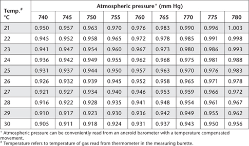
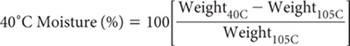
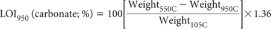

Carbon (C) occurs in soils in many forms. These include carbonate minerals (mostly calcite and dolomite), HCO3 ¯ (Pratt 1966), elemental C (e.g. charcoal; ≈60–98% C), OM from plant and animal residues, and as CO2, which can be both free and dissolved in the soil solution. Organic C, includes carbohydrates, proteins, fats, waxes, residues of micro-organisms, and complex molecules termed humic substances (Ure and Berrow 1982).
The important contribution of SOC to the physical, chemical and biological properties of soils, including soil CEC, is well documented (Parfitt 1980; Stevenson 1986). It is also known that soil degradation problems caused by exploitative farming practices are often accompanied by declines in SOC (Chan et al. 2001). Soil properties and how these are modified by land use are influenced by the nature and degree of decomposition of the OM ‘pool’. Complex OC, which involves associations between OC and soil clay particles, affects water retention and soil bulk density in predictable ways (Dexter et al. 2008).
More labile (reactive) and water-soluble forms of SOC influence soil acidity, nutrient availability, the toxicity and transport of metals (Thurman 1985), and the BOD of adjacent water bodies, following land runoff as the transport pathway (Rayment 2003). SOC features at lower taxonomic levels in Soil Taxonomy, such as in ustollic and fluventic sub-groups (Soil Survey Staff 1975).
Soils account for around two-thirds of the OC of terrestrial ecosystems in active exchange with the atmosphere. Much of this SOC has a residence time of around 1200 y (Post et al. 1982). Typically, soil C density increases in undisturbed ecosystems with decreasing temperature for any level of rainfall, albeit SOC density is usually enhanced in humid regions relative to arid areas exposed to the same level of soil weathering. In practice, OC levels are commonly highest in surface horizons, as this is where most biological activity occurs in fertile, well-drained soils (Dalal and Chan 2001). Insects such as ants and termites, birds and animals, which dig into and dwell in soil, also relocate OM at points of activity (e.g. Lobry de Bruyn and Conacher 1990).
The amounts of soil C vary from almost zero in silica sand to ≥60% in peaty soils that contain accumulations of partially decayed vegetative material and few soil mineral constituents. Peaty soils develop in places where poor drainage and/or sustained low temperatures inhibit the decomposition of plant residues by micro-organisms. In contrast, SOM quite quickly breaks down in warm to hot, moist, fertile, aerated soils of the subtropics and tropics.
Laboratory estimates of SOC contents are restricted to the quantity and condition of organic materials that accompany soil particles through a 2 mm sieve (Nelson and Sommers 1996), after the removal of obvious plant debris. Finer grinding is commonly recommended prior to analysis to improve soil homogeneity and to lessen the effects of using a small sample size. Aside from mineral-bound forms of C contained in carbonates and the like, most analytical methods on prepared samples focus on total and (less commonly) labile forms of OC. In the case of ‘totals’, conversion factors are often used to estimate total SOM from measured SOC concentrations. Conversion factors range from 1.72 to 2.2 (Baldock and Skjemstad 1999; Dexter et al. 2008; Aust. Std. 4419, 2003), with the factor 1.724 suggested for use as follows but only when site-specific information is unavailable (Sleutel et al. 2007); i.e.:
Table 6.1. Ratings for total SOC (% C by weight) for (i) New Zealand, and (ii) north-eastern Australia.
|
Value/range |
|
|
||
Very low |
<2 |
<0.5 |
Low |
2–4 |
0.5–1.5 |
Medium |
>4–10 |
>1.5–2.5 |
High |
>10–20 |
>2.5–5.0 |
Very high |
>20 |
>5.0 |
SOM = [SOC (same units for both) × 1.724]
As reported by Bruce and Rayment (1982), Spain et al. (1983) and others, the OC contents of Australian soils of different types and locations are mostly <5% C. Desert loams and earthy sands typically contain <0.1% C, whereas humus-rich soils from alpine regions can contain from 7–14% C (Baldock and Skjemstad 1999). Vortman (1980) reported SOC concentrations in surface horizons of 11 New Zealand reference soils of 1.2–9.5% C (wet oxidation method), with a median of 4.3% C, whereas median concentrations at around 50 and 100 cm in the same soils were mostly much lower (0.8 and 0.2% C, respectively). Ratings for total SOC applicable to soil and land use surveys from New Zealand and north-eastern Australia are provided in Table 6.1.
The many different forms and concentrations of soil C challenge the analyst. Also at issue is whether the concentration and forms of soil C, including total and labile forms, need to be known accurately or only approximately. Methods are included that address these different requirements.
Specifically, methods for the determination of SOC have evolved from separate chemical reactions and from reaction kinetics. One, attributed to Walkley and Black (W&B: Walkley and Black 1934; Walkley 1947), involves wet oxidation by a dichromate-sulfuric acid (Cr2O72– – H2SO4) mixture.
With wet oxidation (Walkley 1947), SOM acts to reduce Cr2O72– at elevated temperature. Recoveries of SOC are usually incomplete when there is total reliance on heat of reaction (Method 6A1). Typical recoveries are around 75–90% for surface soils, and vary with soil type and depth. Therefore, C concentrations are reported as OCW&B, without any attempt to convert to total OC by a multiplication factor. When estimates of total SOC by wet oxidation are preferred, the method of Heanes (1984) is available (Method 6B1). It incorporates an external heating step to encourage complete oxidation of SOC. Both wet oxidation methods require correction for positive interference from Cl– in saline soils, while the presence of solid-phase carbonates can lower the expected heat of reaction by ‘consuming’ some of the H2SO4 reagent. Across 72 test samples used in soil inter-laboratory proficiency programs of ASPAC from 1997 to 2007 (e.g. Peverill and Johnstone 1997; Rayment et al. 2007), grand median results by catalysed, high temperature combustion relative to corresponding OCW&B results were 1.08:1 across a concentration range of 0.12–6.4% C.
Three methods included are based on the release of CO2 following high-temperature combustion of small quantities of sample. These catalysed methods for SOC (Dumas C) measure total soil C, including charcoal and carbonates/bicarbonates (unless these are absent or removed prior to analysis). The technology mostly utilises microprocessor-controlled equipment (e.g. Merry and Spouncer 1988). Such equipment has proven robust and reliable, although results can vary slightly between instruments (Sleutel et al. 2007), likely to be due to the temperature of combustion. More details are given in preambles to Method 6B2 (6B2a, 6B2b) and to Method 6B3.
Total SOC can also be predicted by correlations between both NIR diffuse reflectance spectroscopy or MIR diffuse reflectance spectroscopy and conventionally measured total SOC values (Janik et al. 1998; Meyer 1998; Malley et al. 1999; Zimmermann et al. 2007). These non-destructive methods are coded as 6B4a and 6B4b, respectively. They create no adverse environmental wastes but accuracy depends on the quality of conventionally measured total SOC values and the mathematical algorithm/s used for the correlations. As soil carbonate minerals may interfere with infrared spectra, relationships tend to be strongest when carbonates have been removed by pre-treatment and when applied to neutral and acidic soils containing no carbonates. Obviously, chemical pre-treatment (if preferred to separately estimating and adjusting for carbonate) will remove some of the original soil mass, which must be taken into account. Also, the soil must be redried following chemical pre-treatment.
Also described are methods for more labile forms of SOC (Methods 6C1, 6D1, and 6E1).
Method 6C1 quantifies POM by using physical separation based on particle size. POM is quite reactive, and is the form of OC easily lost as a consequence of cultivation (Cambardella and Elliott 1992). Accordingly, knowledge of POM concentrations in soils (reported as % C) can help improve understanding of the role POM plays in the turnover of SOM, a process that helps in the cycling of essential plant nutrients.
Method 6D1 determines the fraction of soil C extractable by the pyrophosphate reagent described in Method 13B1. Blakemore et al. (1987) consider this method to be relevant to the identification of spodic horizons in Soil Taxonomy, when pyrophosphate-extractable Fe values are <0.1%. (The spodic horizon – from Gr. spodos, wood ash – is a dark-coloured subsurface horizon that contains illuvial amorphous substances composed of OM and Al, with or without Fe.) The pyrophosphate solution extracts low molecular weight OM associated with Fe and Al in organic complexes and in short-order minerals such as ferrihydrite.
With growing interest in indicators of soil health, easily-reactive forms of SOC have attracted attention, particularly those based on permanganate-oxidisable OC (Blair et al. 1995). This is because the quantities of OC oxidised by dilute solutions of potassium permanganate (e.g. 0.033 M KMnO4) correlate with many important soil properties (Moody et al. 1997). Method 6E1 derives from Weil et al. (2003) and Moody and Cong (2008) and is suited to laboratory and field use. It uses brief (2 min) soil contact with aqueous 0.033 M KMnO4, followed by 5 min standing in the presence of aqueous 0.1 M CaCl2, the latter added to flocculate soil particles. The method also responds to the presence of WSOC, such as sucrose lost via cane juice during mechanical harvesting of sugarcane or contained in recycled filter mud from sugarmills (Rayment and Bohl 2002). Wang et al. (2003) reported 0.01 M CaCl2 - leachate concentrations of soluble OM from five Australian soils of 127–133 mg C/kg.
The presence of charcoal in soils confounds interpretation of SOC. Even OCw&B (Method 6A1), which uses heat of reaction to oxidise OC, may not discriminate between finely dispersed charcoal and SOC. The finer the charcoal particles, the greater the chances that at least some will be oxidised. Accordingly, traditional methods for OC, which include Methods 6A1 to 6B3, can slightly overestimate OM that might be available for microbiological decomposition. Methods for charcoal-C have been described by Skjemstad et al. (2002), using ultraviolet photo-oxidation and nuclear magnetic resonance spectroscopy, and by Glaser et al. (1998), using benzenepolycarboxylic acids as markers for charcoal-C during HNO3 digestions. These methods are not described herein, as they are analytically time-consuming and expensive. Instead, a method is described (Method 6F1) that uses peroxide and dilute HNO3, with heating to oxidise OC and to quantitatively allow charcoal-C to be determined by dry combustion.
Figure 6.1. Soil OC concentrations vs % robust CVs, derived from ASPAC soil inter-laboratory proficiency programs from 1997–2007.
The final method (6G1) provides a useful estimate of SOM, based on loss-on-ignition. It requires only relatively simple laboratory equipment (precision balance; oven; desiccator) and depends on the knowledge that ignition of soils at 500–550°C for 2 h removes almost all OM with little dehydroxylation of clay minerals (Heiri et al. 2001). If operated sequentially, the same soil sample and tared container can be used to measure the moisture held between air drying (40°C) and oven drying (105°C), including most water of crystallisation; a rough estimate of SOM, plus an estimate of soil carbonate content, obtained from the loss of weight across the temperature range 550–950°C. Based on unpublished data of B. Daly, the upper temperature range may be insufficient to completely remove shell carbonates from all New Zealand soils.
The methods described in this chapter, what they measure, and an indication of the accuracy or reliability of the measurements, are summarised in Table 6.2 and discussed further in preambles to each method. Figure 6.1 shows how robust co-efficients of variation varied continuously with SOC concentrations by two methods, when homogenous soils of <0.5 mm were analysed. The data were sourced from laboratories across Australasia that participated in ASPAC inter-laboratory proficiency programs from 1997–2007, including those reported by Peverill and Johnstone (1997) and Rayment et al. (2007).
Irrespective of method, analytical cleanliness is essential, because dust, dirt and fumes containing elevated CO2 concentrations can lead to positive errors (Nelson and Sommers 1996), particularly at low soil C concentrations. Similarly, all soil sampling and grinding equipment should be free of oil and corrosion inhibitors, as these substances can transfer to the sample, adding to the apparent soil C content. Fine grinding of <2 mm soil samples to ≤0.5 mm helps increase repeatability by decreasing soil heterogeneity (Heanes 1984), and can elevate apparent results slightly (Merry and Spouncer 1988).
Concentrated H2SO4 is added to soil wetted with a Cr2O72– solution. Heat of dilution raises the temperature to 110–120°C, which is sufficient to induce substantial oxidation. The reaction is as follows:
Table 6.2. Summary detaÕ of method codes, technologies, method titles and notes on soÕ C tests described in this chapter.
Code |
Technology |
Test method |
Notes |
6A1 |
Wet oxidation. |
Organic C – W & B (OCW&B). |
Total OC (approximate – due to incomplete chemical reaction, subject to removal of Cl– interference). |
6B1 |
|
Total organic C – Heanes wet oxidation. |
Total OC (subject to removal of Cl– interference). |
6B2a |
Catalysed, high temperature combustion. |
Total organic C – Dumas high-temperature combustion, volumetric (no soil pretreatment). |
Measures TOC only in the absence of charcoal and carbonate interferences – otherwise yields total C. Superior technology is now available. |
6B2b |
|
Total organic C – Dumas high-temperature combustion, infrared/thermal conductivity detection (no soil pretreatment). |
Measures TOC only in the absence of charcoal and carbonate (and bicarbonate) interferences – otherwise yields total C. |
6B3 |
Physical and chemical pretreatments then catalysed, high temperature combustion. |
Total organic C – high temperature combustion furnace, infrared/thermal conductivity detection (with prior physical removal of visible charcoal and chemical removal of carbonates). |
Good estimate of TOC in soils containing visible charcoal, carbonates and bicarbonate. |
6B4a |
Infrared diffuse reflectance spectroscopy. |
Total organic C – NIR reflectance spectroscopy. |
Total OC (surrogate by correlation). |
6B4b |
Total organic C – MIR reflectance spectroscopy. |
Total OC (surrogate by correlation). |
|
6C1 |
Physical-chemical |
Particulate organic C in >53 μm dispersed soil using hexametaphosphate. |
Good estimate of soil POC. |
6D1 |
Extractable C. |
Pyrophosphate-extractable C. |
Empirical estimate. |
6E1 |
Readily labile C. |
Potassium permanganateextractable C. |
An empirical, soil C availability indicator, suited to field and lab use. |
6F1 |
Concentrated peroxide/nitric acid digestion before dry combustion of residue. |
Charcoal C by digestion to oxidise OC, before dry combustion of residue. |
Empirical: expect high recoveries at <0.1% charcoal-C. |
6G1 |
Heating to specified temperatures. |
Total organic matter, TOC and carbonate, all by loss-on-ignition. |
Low cost, approximate values. |
In the absence of interferences, the chromic ions (Cr3+) produced should be in reasonable proportion to the OC oxidised. In aqueous acidic solution, Cr3+ has absorption maxima at 450 nm and 600 nm. Since Cr2O72– does not absorb at 600 nm, the absorbance at this wavelength can be used to estimate Cr3+ and hence OC (Sims and Haby 1971; Metson et al. 1979). An advantage over the original titrimetric procedure and the colorimetric estimation of unreacted Cr2O72– solution is that accurate standardisation of the Cr2O72– solution is not required.
Since Cl– reacts to form chromyl chloride (CrO2Cl2), correction for positive Cl– interference in saline soils (>0.5% Cl) is recommended. Ferrous iron (Fe2+) may also produce high results but this possibility is usually ignored (PASS would be an exception) as air-dry soils do not normally contain significant reactive Fe2+ (Anon 1983). Elemental C (e.g. coal and charcoal) is usually little attacked by this method (except if present as very fine particles), while carbonates, even when present at high concentration (e.g. 50%) have inconsequential impacts.
Note that the sodium dichromate (Na2Cr2O7.2H2O) or chromium trioxide (CrO3) used in the procedure are powerful oxidising agents and systemic poisons. Accordingly, avoid external and internal contact and keep these chemicals away from combustible materials due to risk of fire. These are preferred to potassium dichromate (K2Cr2O7), simply for reasons of cost (Metson et al. 1979).
Reagent Water
This water should be in equilibrium with the atmosphere with respect to CO2 concentration, it should have an EC of <1.5 × 10-3 dS/m, and it should be devoid of soluble OM sufficient to affect the blank.
0.5 M Sodium Dichromate
Dissolve ≈149 g L.R. sodium dichromate (Na2Cr2O7.2H2O) in Reagent Water and make to 1.0 L. Filter through sintered glass or glass-fibre filter material to ensure the solution is free of particles prior to use.
1.0 M Chromium Trioxide (alternative to 0.5 M sodium dichromate)
Dissolve ≈100 g L.R. chromium trioxide (CrO3) in Reagent Water and make volume to 1.0 L. Filter through sintered glass or glass-fibre filter material to ensure the solution is free of particles prior to use.
Standard Sucrose Solution
1 mL contains 5 mg of C.
Dissolve 11.8745 g sucrose [(C12H22O11), previously dried for at least 24 h in a desiccator over sulfuric acid (H2SO4; 18 M)], and dilute to 1.0 L with Reagent Water in a volumetric flask.
Sulfuric Acid
Commercial sulfuric acid (H2SO4; sg. 1.84), free of suspended matter.
Prepare a series of standards for each set of analyses by dispensing 0, 1.0, 2.0, 3.0, 4.0, 5.0, ... 10.0 mL (as required) of the Standard Sucrose Solution into 250 mL conical beakers. These standards contain 0, 5, to 50 mg C, corresponding to 0–5% C for a 1.0 g soil sample and 0–25% C for a 0.2 g sample. Evaporate the dispensed sucrose solutions to dryness in an oven at not greater than 65°C then cool to room temperature.
Weigh samples of finely-ground (<0.5 mm), air-dry soil, according to the expected C content: 1.00 g for expected values of <5% C, and 0.20 g for expected values >5.0% C. Transfer soils to dry 250 mL conical beakers (all should be of similar manufacture and dimensions and located equidistance apart). To the standards and soils add 10 mL of 0.5 M sodium dichromate or 1.0 M chromium trioxide solution and swirl gently to ensure all soil particles are wetted. Wait 10 min with occasional swirling then carefully but quickly add across 10–15 sec (use gentle swirling to avoid the loss of soil and chromic acid from localised boiling) 20 mL concentrated H2SO4. Wait a further 30 min with occasional swirling then add 170 mL Reagent Water from a dispenser, stir or swirl to mix thoroughly and set aside to cool and for particles to settle. (Consistent timing across the additions of H2SO4 and dilutant water helps ensure constant reaction conditions, including heat generation.)
After cooling, centrifuge if the supernatant is not clear. Determine absorbance of the supernatant at 600 nm with Reagent Water set at zero. Construct a standard curve by plotting absorbance of the standard sucrose assays against their known contents of C (or use a microprocessor-controlled equivalent). Thereafter, dispose of spent reagents and treated soils in a safe and environmentally responsive manner, noting that Cr is a heavy metal that is both toxic and environmentally persistent.
Repeat the determination with less soil if >75% of Cr2O72– is reduced (only likely with soils of very high C content).
Report OCW&B (% C) on an oven-dry basis, allowing for the weight of sample. Use the air-dry moisture to oven-dry moisture ratio to convert to an oven-dry concentration. Refer to Method 2A1 for guidance with regard to this soil moisture calculation.
Determine water-soluble Cl (Method 5A1 or 5A2) and express results for Cl as a percentage, noting that 10 000 mg Cl/kg = 1% Cl. Also determine apparent OCW&B as described for non-saline soils. Again, repeat the determination with less soil if >75% of Cr2O72- is reduced.
both expressed on the same soil moisture status and allowing for the weight of sample.
Report OCW&B (% C) on an oven-dry basis. Use the air-dry moisture to oven-dry moisture ratio to convert to an oven-dry concentration. Refer to Method 2A1 for guidance with regard to this soil moisture calculation.
The chemical basis of this procedure is similar to that of Method 6A1, except external heating on a hotplate digester is included. The method is that of Heanes (1984). It does not require expensive apparatus and avoids or minimises many interferences (e.g. carbonates, wood, charcoal, coke, Fe2+, readily reducible Mn). Correction for positive Cl– interference in saline soils (>0.5% Cl–) is recommended.
Analogous to Na2Cr2O7.2H2O or CrO3 used in Method 6A1, K2Cr2O7 is a powerful oxidising agent (+6 oxidation state) and a systemic poison, the more so when heated with concentrated H2SO4. Accordingly, avoid external and internal contact and keep the reagents away from combustible materials due to risk of fire. The oxidation step should be carried out in a fume cabinet. Further note that the concentration of Cr2O72– specified in this method is one-third that used in 6A1. Accordingly, the likelihood that >75% of Cr2O72– will be reduced during measurement of soils high in TOC needs close attention.
Thermostatically controlled Al hotplate digester, with a mounted and insulated Al block, able to operate at 135 ± 2°C. For example, 66 holes of 32 mm dia and depth 60 mm can fit within a heating block with dimensions 450 × 250 × 70 mm.
Reagent Water
As for Method 6A1.
0.167 M Potassium Dichromate
Dissolve 49.1 g analytical grade K2Cr2O7 in Reagent Water and dilute to 1.0 L.
Sulfuric Acid
H2SO4 as for method 6A1.
Standard Sucrose Solution
1 mL contains 5 mg of C. Prepare as for Method 6A1.
Prepare a series of standards for each set of analyses by dispensing 0, 0.5, 1, ---- 4.0 mL (as required) of the Standard Sucrose Solution into 100 mL graduated borosilicate test tubes (200 × 30 mm). These standards contain 0, 2.5, 5, . . 20 mg C, corresponding to 0–2% C for 1.0 g soil samples and 0–10% C for 0.2 g soil samples. Evaporate the dispensed sucrose solutions to dryness in an oven, at ≤65°C, then cool to room temperature.
Transfer finely-ground (<0.15 mm; as specified by Heanes 1984), air-dry soil, according to the expected C content, into 100 mL graduated test tubes as used for sucrose standards. No soil sample used in the measurement should contain >20 mg oxidisable C; usually 0.1–2 g containing 20–2.5 mg C. To a blank, dry sucrose standards and soils, add 10.0 mL 0.167 M K2Cr2O7 and agitate carefully while adding 20 mL H2SO4 gradually to avoid the loss of soil and chromic acid from localised boiling. Agitate for a further 30 sec before inserting the test tube and contents into a hole in the preheated (135°C) Al block of the hotplate digester, located in a fume cabinet. Remove tubes from the digester after 30 min and allow them to cool to room temperature. Add Reagent Water to the 50 mL graduation mark (approximately) on the tube and swirl the contents. Next vigorously fill the test tube to near the 100 mL mark, using a wash bottle with Reagent Water, to mix contents and to release the heat of dilution. Allow to cool to room temperature, make to volume (100 mL), seal, invert several times to mix well, and allow the suspension to settle.
Centrifuge to clear the supernatant and measure absorbance at 600 nm. Construct a calibration line by plotting absorbance of the standard sucrose assays against their known contents of C (or use a microprocessor controlled equivalent). Expect the calibration line to be slightly curvilinear. Thereafter, dispose of spent reagents and treated soils in a safe and environmentally responsive manner, noting that Cr is a heavy metal that is both toxic and environmentally persistent.
Calculate total % C – Heanes, allowing for the weight of sample. Repeat the determination with less soil if >75% of Cr2O72– is reduced (see Note 1).
Report total OC – Heanes (% C) on an oven-dry basis. Use the air-dry moisture to oven-dry moisture ratio to convert to an oven-dry concentration. Refer to Method 2A1 for guidance with regard to this soil moisture calculation.
Determine water-soluble Cl– (Method 5A1 or 5A2) and express results for Cl– as a percentage, noting that 10 000 mg Cl/kg = 1% Cl. Also determine apparent total OC – Heanes, as described for non-saline soils. Repeat the soil C determination with less soil if >75% of Cr2O72- is reduced (see Note 1).
TOC (Heanes) = [Apparent TOC% – water-soluble Cl– (5A1 or 5A2; % Cl)], both expressed on the same soil moisture status and allowing for the weight of sample.
Report results as described for non-saline soil. Use the air-dry moisture to oven-dry moisture ratio to convert to an oven-dry concentration. Refer to Method 2A1 for guidance with regard to this soil moisture calculation.
1. 0.167 M K2Cr2O7 (i.e. 1.0 N K2Cr2O7) is the reagent concentration described by Heanes (1984). As 75% of Cr2O72– is required for 22.5 mg organic-C, it follows that for a 1.0 g sample, the 75% reagent ‘barrier’ is reached at a soil concentrations of about 2.25% C. For a 0.2 g sample, the corresponding soil concentration is 11.25% C.
Catalysed, high temperature combustion methods (Dumas C) estimate total soil C when charcoal and carbonates/bicarbonates are present in the samples presented for analysis. TOC is applicable only when these ‘interferences’ are absent or removed prior to analysis.
Procedures are provided that employ high temperature combustion of around 1050–1200°C but with different means of measuring the amount of CO2 liberated. The first, now largely superseded by superior technology, involves volumetric measurement of the liberated gases (Method 6B2a). Method 6B2b uses contemporary technology, albeit different instrument manufacturers may vary catalysts, furnace temperatures and CO2-sensing technologies to optimise measurement performance. Method 6B3 is similar to Method 6B2b, except it incorporates a chemical pre-treatment step to remove positive interferences from carbonates/bicarbonates plus the earlier physical removal of visible charcoal and similar sources of elemental C.
From a workplace health and safety perspective, laboratories that employ O2-enriched, high temperature combustion methods must take precautions to prevent burns and fires, and also while handling compressed gases. Avoid open flames and sparks and have a fire blanket and an appropriate fire extinguisher close to hand.
This method from Rayment and Higginson (1992), originally coded as 6B2, involves production, purification and measurement of CO2 evolved when soil C is ignited in a stream of O2. It only provides an accurate result for TOC in soil samples with no carbonate minerals and no charcoal (and similar materials containing elemental C). In their presence, the result equates to total soil C.
Equipment and reagents supplied by the Laboratory Equipment Corporation (LECO), St Joseph, Michigan (USA) are suitable for this purpose.
High temperature (≥1300–1400°C) can be produced by a high frequency electrical flux induced in a mixture of the soil sample and a conducting matrix of Fe chips. The gas produced is purified of dust, precipitated silver (Ag) is used to remove chlorine (Cl2), any carbon monoxide (CO) is converted to CO2, while sulfur dioxide (SO2) is removed with manganese dioxide (MnO2). The purified CO2 is determined by a volumetric procedure.
Because all C compounds are converted to CO2, C from carbonates, charcoal, undecomposed wood, etc, will be included in the result, unless absent or removed in advance, noting that unglazed sample ‘boats’ are not suitable for pretreatment with acid to remove carbonates. Therefore, soils containing carbonates/bicarbonates should be analysed by Method 6B3, or the apparent results corrected for the percentage of carbonate/bicarbonate determined by separate analysis (Method 19A1 or 19B1). Corrective actions (if any) for the minimisation of interferences should be noted when reporting results.
CO2 is measured volumetrically, which nowadays is superseded technology. The resultant gases (CO2 + O2) are passed into a calibrated burette in which 5% H2SO4 is displaced. The CO2 + O2 are flushed through concentrated KOH solution, thus absorbing the CO2 evolved. The difference between the original volume of gas in the burette and the volume of CO2-free gas equals the volume of CO2 evolved. The soil C content is equated after correction for temperature and pressure.
Refer to Figure 6.2 for a flow diagram of the induction furnace.
Sulfur trap
Moist MnO2 has a tendency to absorb CO2, resulting in low results. Minimise this by placing the S-trap immediately after the CO-converter furnace. If fresh MnO2 is used, pass copious amounts of CO2 through the S-trap and then flush with O2 to remove any excess CO2. If the S-trap is kept free of water, renewal of the MnO2 and subsequent flushing with CO2 and O2 are required infrequently.
Iron (Fe) Chips
LECO Cat. No. 501-077 or equivalent.
Tin (Sn) Metal
LECO Cat. No. 501-076 or equivalent.
Silicic Acid
Use silicic acid (H2SiO3) or pure powdered silica sand.
Manganese Dioxide (MnO2)
LECO Cat. No. 501–060 or equivalent.
Precipitated Silver Metal (for chlorine trap)
Precipitate Ag from a silver nitrate (AgNO3) solution with technical sodium dithionite (Na2S2O4 + H2O) solution. Filter, wash precipitate with Reagent Water and dry.
Table 6.3. Sample weights for LECO carbon furnace: these weights may differ slightly for other brands of simÕar equipment. SoÕs for which weights of 0.10 and 0.025 g are recommended must be very finely ground to decrease sample heterogeneity.
Sample weight (g) |
Expected carbon content (% C) |
1.00 |
0–1.5 |
0.25 |
>1.5–6.0 |
0.10 |
>6.0–15.0 |
0.025 |
>15.0–60.0 |
5% Sulfuric Acid
Carefully add 50 mL 18 M H2SO4 to Reagent Water and make to 1 L.
Potassium Hydroxide Solution
Prepare an ≈2 M solution by dissolving with care 112.2 g technical grade potassium hydroxide (KOH) in Reagent Water. When cool, make to 1 L.
Weigh samples of air-dry (≈40°C) and finely-ground (<0.5 mm) soil, according to the expected C content as shown in Table 6.3. For a 1.00 g sample of soil, load a crucible successively with 1 scoop (delivering about 1.0 g) of Fe chips, the soil sample, ½ scoop tin (Sn) metal and 2 scoops Fe chips. For samples <1.00 g, load crucibles with 1 scoop of Fe chips, soil sample, silicic acid, ½ scoop Sn metal and 2 scoops Fe chips. Silicic acid is included to increase viscosity of the molten material, thus decreasing crucible failures.
Prepare blank crucibles, loaded with reagents but with soil omitted, and run these until a zero reading is obtained before proceeding with samples; usually 2 or 3 blanks are required. The preferred combustion temperature is ≈1050–1200°C.
Place a loaded crucible on the pedestal and adjust the flow-rate of O2 to 0.8 L/min. Raise pedestal into the induction field; this simultaneously closes the system and initiates induction. Combustion gases are passed through a dust trap, a Cl2 trap, a converter furnace, and an S-trap before reaching the volumetric analyser. Frequently clean and dry the calico filter and delivery tube leading to the dust trap in order to prevent absorption of CO2 by water and dust.
When the reaction is complete, as indicated by the level of acid remaining static in the measuring burette, stop the O2 flow and remove the sample by lowering the pedestal.
Read % C directly from the appropriate scale (determined by the sample weight) on the calibrated burette. Correct this value by a factor dependent on the temperature of the CO2 and atmospheric pressure: refer to Table 6.4, or as guided by the instrument manufacturer. An appropriate chemical to double check on measurement accuracy is analytical grade acetanilide (C6H5NHCOCH3; MW 135.16; 71.09% C).
Report total C (%), on an oven-dry basis. Use the air-dry moisture to oven-dry moisture ratio to make the oven-dry conversion. Refer to Method 2A1 for guidance with regard to this soil moisture calculation.
This method, originally coded as 6B3 by Rayment and Higginson (1992), is similar to Method 6B2a, except that the CO2 produced by O2-enriched, high-temperature combustion (e.g. LECO 2000 Series Induction Analyser or similar equivalents from several manufacturers including Vairomax, Elementar and Shimadzu) is measured by technology quantitative for CO2, typically infrared detection or thermal conductivity detection, supported by a microprocessor. The method only provides an accurate result for TOC in soil samples with no carbonate minerals and with no charcoal – and similar materials containing elemental C (see Merry and Spouncer 1988; ISO 10694 1995; Nelson and Sommers 1996; and Kerven et al. 2000). When these are present, the result equates to total soil C. The temperature of ignition is controlled, with near-complete combustion of OC occurring at O2-enriched furnace temperatures of around 900°C (Tiessen and Moir 1993), although some instruments have the capacity to acquire additional information by applying different temperature sequences.
Figure 6.2. Schematic flow diagram of the induction furnace.
Table 6.4. Factor chart for LECO carbon furnace.

Set up and maintain the high-temperature combustion analyser in accord with manufacturer’s instructions. Tiessen and Moir (1993) warn that in routine use at high temperatures, hairline cracks may form in the ceramic tube of the combustion furnace, causing leaks and low CO2 recoveries.
Calibrate using CaCO3 (12.0003% C), acetanilide (C6H5NHCOCH3; MW 135.16; 71.09% C), or certified soil material. Calibrations may be developed for specific types of samples.
Typically weigh between 0.5 and 0.75 g finely ground (<0.5 mm; 40°C) air-dry soil into a ceramic ‘boat’ (or vessels recommended by the instrument’s manufacturer) and spread evenly. For soils containing high C concentrations, place a layer of ignited silica sand (or a proprietary combustion controller) over the weighed sample to slow combustion. This overcomes the possibility that a high rate of combustion can over-saturate the detection cell.
Set furnace temperature to 900°C (or as recommended up to ≈1050–1300°C). Also, repack the reagent [anhydrous magnesium perchlorate; Mg(ClO4)2] tubes whenever the reagent becomes caked or moist or the warning alarm sounds, noting Mg(ClO4)2 is a strong oxidiser that also causes respiratory tract irritation and other health disorders of the eyes, skin and central nervous system. A quality control sample of known soil C concentration should be included in each batch of around 10 samples.
Report total C (%) on an oven-dry basis. Use the air-dry moisture to oven-dry moisture ratio to make the oven-dry conversion. Refer to Method 2A1 for guidance with regard to this soil moisture calculation.
Many soils, such as Australia’s Calcarosols (these are calcareous throughout; see Isbell 1996), contain quantities of carbonate minerals sufficient to cause positive errors in the measurement of TOC. In addition, wood, charcoal and peat often contain small amounts of absorbed carbonates from percolating groundwater, while shells are another potential source of positive errors in the measurement of TOC.
Little can be done quickly and confidently to remove all charcoal and the like from routine samples, other than to visually inspect and then to physically remove such materials, prior to commencement of soil grinding operations (see Note 1).
As for carbonate minerals, one option is to separately determine soil carbonate content (Methods 19A, 19B or 20H1 are preferred; see Note 2) and adjust the apparent SOC content to the amount of C present, noting the concentration in CaCO3 is ≈12% C. There are times, however, such as in isotopic-dating studies, when solid-phase carbonates need to be removed chemically prior to SOC analysis (e.g. Higham, undated).
Chemical pretreatment with dilute acids to remove carbonates is common (Fernandes and Krull 2008), with treatment with 5% sulfurous acid (H2SO3) preferred, using the procedure described by Nelson and Sommers (1996). Other chemical approaches include in situ treatment with H2SO3 in silver capsules (Fernandes and Krull 2008) and treatment with 10% HCl followed by rinsing with water (Higham, undated).
Following quantitative pre-treatment, the residual sample must be analysed for soil C by a suitable method, usually Method 6B2b.
Reagent Water
As for Method 6A1.
4 M HCl
Dilute 40 mL reagent grade HCl (10 M) to 100 mL with Reagent Water.
≈5% Sulfurous acid (H2SO3) (an aqueous solution of SO2)
Purchase commercially or alternatively bubble (with care in a fume cabinet) sulfur dioxide (SO2) gas through an aliquot of Reagent Water until a saturated solution is obtained. The SO2 can be made by the controlled burning of elemental S or by carefully roasting various sulfide ores in a fume cabinet. Store in a stoppered, borosilicate bottle to prevent rapid loss of SO2 (a poisonous gas) from the saturated solution.
Sodium Hydroxide (pellets)
Initially remove any charcoal, wood, coal or the like, prior to commencement of soil grinding operations. Also perform a spot-test for the presence of significant carbonate. To do this, place a portion of a finely-ground sub-sample (<0.5 mm) on a ‘spot plate’, moisten with a few drops of Reagent Water, then add 4 M HCl drop-wise to the wetted sample, and inspect for the presence of any effervescence, allowing up to at least 5 min for reaction with dolomite to occur. If there is no visible reaction and no reason to otherwise suspect the presence of carbonate/bicarbonate, then proceed to determine SOC by Method 6B2b.
When carbonate-C is confirmed and accurate measurement of TOC is essential, ‘condition’ a series of non-porous combustion ‘boats’ by igniting them to remove all traces of carbonate (and other forms of C), cool, number and tare. Also take a known weight of the finely-ground sub-sample (<0.5 mm), based on the capacity of the combustion analyser and of the vessel used in the combustion analyser (be guided by the final sample-weight requirements of Method 6B2b). Treat each sample separately (and quantitatively) with an excess of 5% H2SO3 solution on a hot plate in a fume cabinet free of C contamination. Subsequently, remove excess acid and residual moisture over several hours before loading vessels into combustion analyser as in Method 6B2b.
Report TOC (% C; Method 6B3) on an oven-dry basis. Use the air-dry moisture to oven-dry moisture ratio to make the oven-dry conversion, based on the initial sample weight. Refer to Method 2A1 for guidance with regard to this soil moisture calculation.
1. If chemical removal of charcoal is essential, refer to procedures used by Skjemstad et al. (1994) and by Masiello et al. (2002).
2. A practical alternative is to measure the total soil C on both untreated and treated samples, thus obtaining total soil C, TOC and inorganic C. Also note that Method 19A1 can overestimate acid neutralising capacity of soil because of the higher strength of acid used, relative to 20H1.
Infrared (IR) diffuse reflectance spectroscopy is an emerging technology that relies on statistical relationships between IR soil spectra and results obtained from ‘conventional’ measurements, in this case for TOC. The technique has also been used to quantify SOC fractions (Cozzolino and Morón 2006; Zimmermann et al. 2007).
This non-destructive analytical option for soil C follows developments in spectrometer hardware covering near infrared reflectance (NIR: e.g. 750–2500 nm) and mid infrared reflectance (MIR: e.g. 2500–25 000 nm) in conjunction with smart statistical software. Fundamental is the knowledge that different IR absorption bands exist that can be assigned to spectral overtones and combinations of the fundamental vibrations (Beech et al. 2003) associated with chemical bonding of C, H and O, etc., such as C=C, C-H, C-O, C=O, OH, COOH, etc. (e.g. see Table 35-3 of Swift 1996). Relative peak intensities, commonly but not exclusively assessed using partial least square regressions, help to achieve quantitative analysis (Stevens et al. 2008).
Laboratory methods for TOC using both NIR (e.g. Dalal and Henry 1986; Reeves et al. 1999; Stevens et al. 2008) and MIR (e.g. Janik and Skjemstad 1995; Janik et al. 1998; McBratney et al. 2006) spectra are provided in Methods 6B4a and 6B4b, respectively. Each laboratory must confirm that strong, robust relationships exist between outputs from their specific IR analyser/s and conventional measurements of SOC. Regional or national calibration datasets may become available, derived by ‘fingerprinting’ modal examples from ‘legacy’ and new soil collections (Viscarra Rossel et al. 2008). Moreover, if the conventional measurements were expressed on an oven-dry basis, then the IR results for TOC will also apply to oven-dry soils. Sequential scans typically take ≈1–2 min/sample. Unless predetermined otherwise by the calibration dataset, the soil samples should be ≈40°C air-dry and finely ground (<0.5 mm) at the time of scanning. Figure 6.3 shows the small amount of laboratory bench-space required for IR instrumentation.
Figure 6.3. Examining NIR and MIR spectra from multiple soils as part of the task of calibrating the instrument to measure soil C (and a range of other soil properties).
This test for TOC uses NIR diffuse reflectance spectroscopy. The instrument’s outputs should be related to one of the 6B methods, either using generic relationships from a spectral library or by establishing in-house relationships, ideally with 1:1 linear relationships and coefficients of determination of ≥0.9 across the expected soil TOC concentration range.
Stabilise and verify the set-up and operating performance of the NIR spectrometer, usually incorporating an auto-focussing diffuse reflectance accessory or capability. Also confirm the ‘standard calibration’ for the 6B-SOC method of preference. For example, if significant carbonate is known to be present, the preferred ‘conventional’ method is 6B3.
Load the instrument’s auto-sampler with ‘unknown soils’, previously dried at ≈40°C and finely ground (<0.5 mm) to assist with sample uniformity. Typically, the instrument or its associated computer will integrate the spectral signals with the calibration equations to provide the result without further calculation, if the conventional method’s results were expressed on an oven-dry basis. If the calibration equations were based on conventional measurements expressed on an air-dry basis (≈40°C), then the NIR results will need to be adjusted for residual moisture using relevant air-dry moisture to oven-dry moisture ratios, guided by Method 2A1.
Report TOC (% C) by NIR on an oven-dry basis.
This test for TOC uses MIR diffuse reflectance spectroscopy. The instrument’s outputs should be related to one of the 6B methods, either using generic relationships from a spectral library or by establishing in-house relationships, ideally with 1:1 linear relationships and coefficients of determination of ≥0.9 across the expected soil TOC concentration range. The same technology is suitable for predicting the concentrations of other soil chemical and physical properties.
Stabilise and verify the set-up and operating performance of the MIR spectrometer, usually incorporating an auto-focussing diffuse reflectance accessory or capability. Also confirm the ‘standard calibration’ for the 6B-SOC method of preference. For example, if significant carbonate is known to be present, the preferred ‘conventional’ method is 6B3.
Load the instrument’s auto-sampler with ‘unknown soils’, previously dried at ≈40°C and finely ground (<0.5 mm) to assist with sample uniformity. Typically, the instrument or its associated computer will integrate the spectral signals with the calibration equations to provide the result without further calculation, if the conventional method’s results were expressed on an oven-dry basis. If the calibration equations were based on conventional measurements expressed on an air-dry basis (≈40°C), then the MIR results will need to be adjusted for residual moisture using relevant air-dry moisture to oven-dry moisture ratios, guided by Method 2A1.
Report TOC (% C) by MIR on an oven-dry basis.
According to Baldock (2008), four biologically significant types or fractions of SOC exist, viz.:
The four fractions described are composed of different materials with different chemical and physical properties and different decomposition rates. Moreover, the amount of each fraction is highly dependent on management practices; for example, the tillage practices employed. Although crop residues usually break down quickly, the method described herein for POC will include some crop residues as defined by Baldock (2008).
Key functions of POC include improving soil structure and the cycling of soil nutrients. Six et al. (2000) claim POC improves soil aggregation since it can form an organic pore surrounded by clay, silt particles and aggregates. According to Skjemstad et al. (2002), most charcoal-C is retained in the <53 μm fraction but some larger charcoal particles can be retained with the POC fraction. Therefore, sample inspection under a microscope is recommended before analysis for charcoal-C using, for example, the nuclear magnetic resonance approach of Skjemstad et al. (2002). Charcoal in the POC fraction can then be removed as had been done earlier by other workers (e.g. Swain 1973; Tolonen 1986) who both sorted charcoal particles by hand or under a microscope in estimating the soil content of charcoal-C.
The extraction component of this method follows that used by Cambardella and Elliott (1992). Finely ground, air-dry soil is mechanically dispersed overnight in aqueous sodium hexametaphosphate, with subsequent filtering through a 53 μm sieve. The material retained on the sieve is then dried and homogenised using a mortar and pestle before dry combustion (Dumas) for organic C, an approach used by Bouajila and Gallali (2008). Carbonate particles, if present, cause positive interference and should be removed physically or accounted for by separate analysis by Method 19A or 19B.
Calgon solution (5 g/L)
Dissolve 10.0 g of sodium hexametaphosphate [mainly (NaPO4)6; marketed as Calgon] in 2 L of deionised water in a graduated beaker.
Weigh 10.00 g of finely-ground (<0.5 mm; 40°C) air-dry soil into a stoppered plastic container capable of loading on a mechanical shaker (see Note 1). Add 30 mL of 5g/L (NaPO4)6 solution and mechanically shake for 15 h.
Pass the dispersed soil/(NaPO4)6 solution through a 53 μm sieve and, after rinsing several times with deionised water, dry the retained material at 50°C to constant weight, typically overnight. Homogenise quantitatively each sample using a mortar and pestle (if necessary), then determine TOC in the dried residue using the analytical finish described in 6B1 or 6B3. Remove or account for any solid-phase carbonate present in the residue.
Report POC (% C), on an oven-dry basis. Use the air-dry moisture to oven-dry moisture ratio to make the oven-dry conversion. Refer to Method 2A1 for guidance with regard to this soil moisture calculation.
1. Cambardella and Elliott (1992) used a reciprocating shaker. Gentle end-over-end mechanical shaking is preferred, however.
This method adds value to Method 13B1 by extracting Fe- and Al-bound organic complexes.
As for Methods 6B1, 6B2 or 6B3 and 13B1.
Prepare pyrophosphate soil extracts as described in Method 13B1, then pipette 10.0 mL of extract into 30 mL teflon beakers and evaporate to a low volume on a sand bath or equivalent. Transfer the concentrated pyrophosphate extract for the determination of total C by Method 6B1 or 6B2b, using a minimum amount of water to ensure this step is quantitative.
If using a method based on Dumas high-temperature combustion, add 1 scoop of silica sand and 1 scoop of Fe chips to a LECO crucible and place on the sandbath at least 10 min before they are needed. Next transfer carefully and in stages the concentrated pyrophosphate extract to the contents of the LECO crucible, taking care that the liquid does not soak through the crucible. When dry, add ½ scoop of Sn metal and 2 scoops of Fe chips and determine total C content. Alternatively, use combustion conditions and catalysts as recommended by the instrument’s manufacturer.
Calculate pyrophosphate-extractable C and correct to an oven-dry basis after allowing for the 1:100 ratio of the initial pyrophosphate extract and the 10 mL aliquot taken.
Report as pyrophosphate-extractable C (% C) on an oven-dry basis, using relevant air-dry moisture to oven-dry moisture ratios. Refer to Method 2A1 for guidance with regard to this soil moisture calculation.
This method guided by Moody and Cong (2008) uses 0.033 M KMnO4. It targets labile or active SOC, including any WSOC that might be present. Results typically correlate with several key soil properties: aggregate stability (Blair et al. 1995, 1996; Bell et al. 1999); ECEC and pH buffer capacity (Moody et al. 1997); and microbial biomass-C (Moody et al. 1999). Across a range of soils, PPOC is generally well correlated with TOC (e.g. Moody et al. 1997). At least portion of the measured PPOC, however, can sometimes be the result of short-term land management practices that add highly labile WSOC to the ‘system’ (sucrose is an example). Elevated BOD in adjacent natural waters can result if this WSOC leaves the site in runoff (Rayment 2003).
An earlier method of oxidising SOC by permanganate (Loginow et al. 1987) used 0.333 M, 0.167 M, and 0.033 M KMnO4 to differentiate three fractions whereas Weil et al. (2003) preferred 0.02 M KMnO4 as the oxidising agent. The inclusion of CaCl2 in the reagent is to enhance flocculation of the soil extracts. Reaction time is precisely 2 min plus precisely 5 min of subsequent standing/settling time.
Reagent Water
As for Method 6A1.
Dissolve 14.7 g calcium chloride dihydrate (CaCl2.2H2O) and make to 1.0 L with Reagent Water.
0.033 M Potassium Permanganate
Dissolve 5.2151 g analytical grade potassium permanganate (KMnO4) in Reagent Water in a small beaker with stirring and heating (use a hotplate no warmer than 60°C) until fully dissolved. Filter through a funnel containing a plug of washed borosilicate glass wool and dilute to 1.0 L in a volumetric flask. Store the solution in an amber glass bottle or in the dark.
Standard Potassium Hydrogen Phthalate Solution (0.0405 M)
1 mL contains 4.504 mg of C.
Weigh and dissolve 9.5728 g potassium hydrogen phthalate (KHC8H4O4; previously dried for 2 h at 110°C) and make volume to 1.0 L with Reagent Water. (This C-standard is only required for double-checking purposes.)
Working Standard Solutions
Whether testing in the laboratory or in the field, prepare five Working Standard Solutions from the same batch of 0.033 M KMnO4, Reagent Water and 0.1 M CaCl2 as outlined below. For Working Standards 1, 2, 3, 4 and 5, accurately add 20, 15, 10, 5 and 0 (zero) mL of Reagent Water, then dispense sequentially and accurately into the same flasks 5.0, 10.0, 15.0, 20.0 and 25.0 mL of 0.033 M KMnO4 (same batch as to be used for the unknowns) and mix well. The molarities of KMnO4 in these Working Standards equate to 6.6, 13.2, 19.8, 26.4 and 33 mM KMnO4, respectively. Next add 1.0 mL of 0.1 M CaCl2 to each standard solution and mix well.
Add 1.0 mL of each of the five Working Standard Solutions to a set of numbered, 50 mL calibrated plastic tubes and add Reagent Water to the 50 mL mark. Cap and shake by hand. Prepare these Working Standard Solutions on the day of use. If for field use, take to the field already prepared.
Combine and mix soil sub-samples and then air dry a thin layer of each soil sample in the sun for 1 h in a dust-free place. After this drying step, crush and remix the sample, ideally to a particle size of <2 mm.
At a similar time, set up a portable colorimeter (e.g. a palm-top Hach® colorimeter able to measure absorbance at 550 nm) for later use.
Weigh 5.0 g of the field-dried soil (or use a suitable scoop equivalent to 5 g soil) into a 50 mL plastic centrifuge tube, noting that weight/volume relationships can vary with soil type, and whether recently cultivated or otherwise. Into each tube dispense accurately 25.0 mL of 0.033 M KMnO4 solution then add 1 mL of 0.1 M CaCl2 solution to assist flocculation of soil particles. Cap the tube then shake the mixture by hand for precisely 2 min. Leave the mixture to stand for precisely 5 min, then immediately take 1 mL of the supernatant using a pipette and dilute this aliquot in a plastic centrifuge tube to the 50 mL mark with Reagent Water (or water known to be free of dissolved OC).
Zero the portable colorimeter (or spectrophotometer) with Reagent Water and measure the absorbances of all standard solutions and samples at a wavelength of 550 nm (see Note 1). Plot mM KMnO4 of the five Working Standards (x-axis) against absorbance (y-axis) and either draw a straight line through the points or fit a regression line to the relationship. Use this relationship to determine the concentration of KMnO4 (mM) left in the unknown samples after the oxidation period.
As an occasional check on the quality of reagents, particularly 0.033 M KMnO4, dispense (say) 1 mL and 2 mL of Standard Potassium Hydrogen Phthalate Solution into the 50 mL plastic centrifuge tubes normally used for unknown soil samples. Evaporate the dispensed standard solutions to dryness in an oven, at not greater than 65°C, then cool to room temperature before dispensing accurately 25.0 mL of 0.033 M KMnO4 solution, adding 1 mL of 0.1 M CaCl2 and continuing as previously described. These should contain 4.504 and 9.008 mg of C, respectively. If not the case, double-check the quality of the KMnO4 solution.
When performed in the laboratory, the soil samples should arrive as quickly as possible following field sampling or otherwise kept at or below 4°C during transportation in order to suppress biological activity prior to efficient air drying at 40°C.
After drying, crush, grind or sieve the soils to <0.5 mm, then weigh 5.0 ± 0.1 g and proceed as described for the field procedure. Expect laboratory-performed tests to be slightly higher in PPOC and also more precise than for corresponding soils analysed in the field.
Use the following equation to calculate PPOC with units of g C/kg. This is based on the assumption that each 1.0 mM of MnO4– consumed in reducing Mn7+ to Mn2+ is equivalent to the oxidation of 0.75 mM of C (or 9.008 mg of C). The following equation takes this and the soil/solution ratio into account:
where:
M0 = initial concentration of KMnO4 (0.033 M = 33 mM)
M1 = concentration of KMnO4 (mM) after oxidation (calculated from standard calibration curve)
Report PPOC (g C/kg) on an air-dry basis.
1. If the absorbance of any sample is less than 0.4, repeat the extraction using 2.5 g of soil instead of 5 g of soil, to ensure excess KMnO4 is present throughout the reaction.
Many soils contain charcoal, resulting from thousands of years of burning of C-rich materials, combined with a turnover time measured in centuries or millennia (Skjemstad 2001). Charcoal generated by fires can constitute up to 0.8% C in soil and may represent up to 30% of the SOC content of Australian soils (Skjemstad et al. 1996). Charcoal is not used by micro-organisms and therefore does not contribute to soil biological activity. It follows that as POC and other reactive forms of C decline with periods of cultivation, the more stable charcoal fraction increases as a portion of total soil C. Accordingly, as soil fertililty levels decline, the need to account for charcoal is becoming more important, as most contemporary methods for total SOC cannot discriminate between charcoal-C and other SOC forms. McBeth et al. (undated) reported that charcoal-C in the 0–2 cm topsoil layer was higher at sites where vegetation had been burnt relative to adjacent non-burnt areas.
Analytical methods for charcoal-C have been described by Glaser et al. (1998) and by Skjemstad et al. (2002) but these methods are complex and time-consuming. MIR offers potential for determining soil C fractions (Merry and Janik 2001; Janik et al. 2007) but successful analysis by MIR of charcoal-C across multiple laboratories has still to be demonstrated. Therefore, the chemical method described involves gentle, relatively lengthy digestion of soil with a combination of concentrated hydrogen peroxide and dilute nitric acid, the subsequent recovery of charcoal residues, followed by quantitative determination of charcoal-C in the residue using Dumas combustion as the analytical finish (Kurth et al. 2006). The method was able to recover (see Note 1) >92% of the charcoal added (R2 = 0.99) and effectively consume most of the other forms of SOC. As recovery estimates were high at low concentrations (<0.1% charcoal-C), the authors suggested a correction multiplier of 0.70 to account for this over-estimation. Based on reported data, the method described is expected to be reasonably quantitative over the working range 0.1–5% charcoal-C (dry wt).
30% Hydrogen Peroxide
Use 30% technical or analytical grade hydrogen peroxide (H2O2). Handle and store this reagent with caution, as H2O2 is hazardous. Users should wear PVC gloves and safety glasses when using the chemical. Operations involving H2O2 should be carried out only where there is excellent ventilation.
1.0 M Nitric Acid
Dilute 66.7 mL of nitric acid, HNO3, 15 M (1.4 g/mL) to 1.0 L using deionised water.
Weigh 1.00 g of air-dry soil into a 250 mL Erlenmeyer flask, add 20 mL of 30% H2O2 and 10 mL of 1 M HNO3. Swirl the flask at room temperature for 30 min. before heating to 100°C and maintaining that temperature for 16 h. Swirl samples occasionally and observe for any continued effervescence. If the chemical reaction in the flask is still active, heating for an additional 4 h is recommended.
When digestion is complete, filter sample through Whatman No. 2 filter paper, before drying the retained material at 50°C overnight. Homogenise the residue quantitatively with a mortar and pestle if required. Determine TOC in the dried material using the analytical finish described in 6B1 or 6B3. Total C measured by Dumas combustion is reported as charcoal-C, following the assumption that all non-charcoal-C has been consumed in the digestion process. When calculating the result from the combustion furnace (or equivalent), take account of the initial sample weight and the weight of dry residue. Also, for apparent charcoal-C values of <0.1%, apply a correction multiplier of 0.70, or as independently obtained by the testing laboratory.
Report charcoal-C (% C) on an oven-dry basis. Use the air-dry moisture to oven-dry moisture ratio to make the oven-dry conversion. Refer to Method 2A1 for guidance with regard to this soil moisture calculation.
1. Recovery estimates reported by Kurth et al. (2006) were made by combining known amounts of soil and charcoal to give 0, 0.05, 0.1, 0.5, 1.0, 2.0 and 5.0% charcoal-C (w/w). Soil and charcoal were mixed by grinding the amended soil to a very fine powder.
Loss-on-ignition (LOI) is a credible option when clients require approximate results for SOC and/or SOM (Davies 1974). The same applies to estimates of soil carbonate.
The methodology is particularly suited to laboratories with a restricted suite of equipment and/or because the test avoids the problem of safe disposal of dichromate-sulfuric acid solutions (Craft et al. 1991). The technology is well-established in laboratories that work with composts and manures, where LOI is used to determine ash content and by reciprocation, the OM content of these materials (Matthiessen et al. 2005). Because the method is relatively safe and inexpensive, it is widely used for diagnostic soil testing in the USA (http://www.agviselabs.com/tech_art/om.php). With few exceptions, elemental C contained in coal or charcoal or other carbonised material is also destroyed at ignition temperatures between 375–850°C (Ball 1964).
The procedure involves the ignition of soils at high temperatures, thereby combusting the OM which is lost, along with any volatile solids that may also exist. There is no universal agreement, however, on the time and temperature of ignition. For example, Nelson and Sommers (1996) recommend ignition at 400°C for 16 h, whereas the preferred combination for composting materials is 550°C for 2 h (Matthiessen et al. 2005). In the method described, the temperature (500–550°C) and time (2 h) for LOI to determine OM content derives from Heiri et al. (2001). Other steps in the procedure allow the calculation of soil moisture content at 40°C and later, an estimate of soil carbonate content following further heating to 950°C.
The method described does not account for the presence of any water of crystalisation that may still exist in some hydrated soil minerals across the temperature range 105–180°C.
Initially ‘condition’ the numbered 20 mL beakers or crucibles at 550°C for around 2 h, cool and determine the tare weight of each to 0.10 mg.
Next add to each tared container a known weight (1–3 g of air-dry soil of <0.5 mm maximum particle size; Weight40C) and heat in the laboratory drying oven at 105°C for 24 h. Cool in a desiccator over fresh anhydrous CaCl2 then determine weight of container + dry soil and subsequently the weight (g) of the oven-dry (105°C) soil by subtraction (Weight105C). Now, place the containers with the dry soils in the pre-heated (500–550°C) muffle furnace and continue the drying process. After 2 h, remove the containers + remaining soil from the muffle furnace, transfer containers carefully to the desiccator containing fresh anhydrous CaCl2 to cool, then weigh as earlier described and obtain the weight of soil by subtraction (Weight550C). If an estimate of soil carbonate content is also required, continue the process by placing the 550°C dried containers and samples in the muffle furnace set at 950°C for 2 h to evolve all the CO2 from any carbonate minerals. Remove the containers + remaining soil from the muffle furnace, cool in the desiccator containing fresh anhydrous CaCl2, then weigh as earlier described and obtain the weight of soil by subtraction (Weight950C).
Calculate the soil moisture content at 40°C from the following equation.

Calculate LOI (OM) from the following equation, noting that % OM is assumed to approximate LOI %.
Calculate LOI (carbonate) from the following equation, noting that % carbonate (oven-dry) is assumed to approximate the LOI (%) multiplied by 1.36, where the factor 1.36 accounts for CO2 = 44 g/mol and CO32– = 60 g/mol in the original sample (Bengtsson and Enell 1986).

Report as Organic Matter by LOI (% OM) on an oven-dry basis. As necessary, report the other two parameters, also on an oven-dry basis.
Anon (1983) Reference Soil Test Methods for the Southern Region of the United States. Southern Cooperative Series Bulletin 289. p. 38. The University of Georgia, College of Agriculture Experiment Stations, September 1983.
Aust. Std. 4419 (2003) Soils for landscaping and garden use. Standards Australia International Ltd, Sydney, NSW.
Baldock JA (2008) Soil carbon: the basics. CSIRO Fact Sheet. http://www.csiro.au/resources/soil-carbon.html.
Baldock JA and Skjemstad JO (1999) Soil organic carbon/soil organic matter. In Soil Analysis: An Interpretation Manual. (Eds KI Peverill, LA Sparrow and DJ Reuter) pp. 159–170. CSIRO Publishing, Melbourne.
Ball DF (1964) Loss-on-ignition as an estimate of organic matter and organic carbon in non-calcareous soils. Journal of Soil Science 15, 84–92.
Beech A, Forrester S and Janik L (2003) Determining gypsum soil conditioner purity by mid-infrared – quick, economical, informative. In Proceedings of the Workshop, Tools for Nutrient and Pollutant Management – applications to agriculture and environmental quality. (Eds LD Currie and JA Hanly) pp. 405–409. Fertilizer & Lime Research Centre (in conjunction with ASPAC) Occasional Report No. 17, Massey University, NZ.
Bell MJ, Moody PW, Yo SA and Connolly RD (1999) Using active fractions of soil organic matter as indicators of the sustainability of Ferrosol farming systems. Australian Journal of Soil Research 37, 279–287.
Bengtsson L and Enell M (1986) Chemical analysis. In Handbook of Holocene Palaeoecology and Palaeohydrology. (Ed BE Berglund) pp. 423–451. John Wiley & Sons Ltd., Chichester.
Blair GJ, Blair N, Lefroy RDB, Conteh A and Daniel H (1996) Relationships between KMnO4 oxidizable C and soil aggregate stability and the derivation of a carbon management index. In 8th Meeting of the International Humic Substances Society, Wroclaw, Poland, September 9–14, 1996.
Blair GJ, Lefroy RD and Lisle L (1995) Soil carbon fractions based on their degree of oxidation, and the development of a carbon management index for agricultural systems. Australian Journal of Agricultural Research 46, 1459–1466.
Blakemore LC, Searle PL and Daly BK (1987) Methods for chemical analysis of soils. NZ Department of Science and Industrial Research, Soil Bureau Scientific Report 80.
Bohl HP, Bonnett GD, Fanning DJ, Rayment GE and Davidson AB (2002) Biological oxygen demand and sugars in irrigation water runoff from sugarcane fields. Proceedings of the Australian Society of Sugar Cane Technologists 24, 297–303.
Bouajila A and Gallali T (2008) Soil organic carbon fractions and aggregate stability in carbonated and no carbonated soils in Tunisia. Agronomy Journal 7, 127–137.
Bruce RC and Rayment GE (1982) Analytical methods and interpretations used by the Agricultural Chemistry Branch for soil and land use surveys. Queensland Department of Primary Industries Bulletin QB 82004.
Cambardella CA and Elliott ET (1992) Particulate soil organic matter changes across a grassland cultivation sequence. Soil Science Society of America Journal 56, 777–783.
Chan KY, Bowman A and Oates A (2001) Oxidizable organic carbon fractions and soil quality changes in an oxic Paleustalf under different pasture leys. Soil Science 166, 61–67.
Cozzolino D and Morón A (2006) Potential of near-infrared reflectance spectroscopy and chemometrics to predict soil organic carbon fractions. Soil and Tillage Research 85, 78–85.
Craft CB, Seneca ED and Broome SW (1991) Loss on ignition and Kjeldahl digestion for estimating organic carbon and total nitrogen in estuarine marsh soils: calibration with dry combustion. Estuaries 14, 175–179.
Dalal RC and Chan KY (2001) Soil organic matter in rainfed cropping systems of the Australian cereal belt. Australian Journal of Soil Research 39, 435–464.
Dalal RC and Henry RJ (1986) Simultaneous determination of moisture, organic carbon, and total nitrogen by near infrared reflectance spectrophotometry. Soil Science Society of America Journal 50, 120–123.
Davies BE (1974) Loss-on-ignition as an estimate of soil organic matter. Soil Science Society of America Journal 38, 150–151.
Dexter AR, Richard G, Arrouays D, Czyz EA, Jolivet C and Duval O (2008) Complexed organic matter controls soil physical properties. Geoderma 144, 620–627.
Fernandes M and Krull E (2008) How does acid treatment to remove carbonates affect the isotopic and elemental composition of soils and sediments? Environmental Chemistry 5, 33–39.
Glaser B, Haumaier G, Guggenberger G. and Zech W (1998) Black carbon in soils: the use of benzenecarboxylic acids as specific markers. Organic Geochemistry 29, 811–819.
Heanes DL (1984) Determination of total organic-C in soils by an improved chromic acid digestion and spectrophotometric procedure. Communications in Soil Science and Plant Analysis 15, 1191–1213.
Heiri O, Lotter AF and Lemcke G (2001) Loss on ignition as a method for estimating organic and carbonate content in sediments: reproducibility and comparability of results. Journal of Paleolimnology 25, 101–110.
Higham T (undated) Chemical pretreatment methods. Radiocarbon Dating Laboratory, University of Waikato, Hamilton, NZ. http://www.c14dating.com/pret2.htm.
Isbell RF (1996) The Australian Soil Classification. CSIRO Publishing, Melbourne.
ISO 10694 (1995) Soil quality–determination of organic and total carbon after dry combustion (elementary analysis). International Standard ISO 10694 1st ed.
Janik LJ, Merry RH and Skjemstad JO (1998) Can mid infrared diffuse reflectance analysis replace soil extractions. Australian Journal of Experimental Agriculture 38, 681–696.
Janik LJ and Skjemstad JO (1995) Characterization and analysis of soils using mid-infrared partial least-squares. II Correlations with some laboratory data. Australian Journal of Soil Research 33, 637–650.
Janik LJ, Skjemstad JO, Shepherd KD and Spouncer LR (2007) The prediction of soil carbon fractions using mid-infrared-partial least square analysis. Australian Journal of Soil Research 45, 73–81.
Kerven GL, Menzies NW and Geyer MD (2000) Soil carbon determined by high temperature combustion: a comparison with dichromate oxidation procedures and the influence of charcoal and carbonate on the measured value. Communications in Soil Science and Plant Analysis 31, 1935–1939.
Kurth VJ, MacKenzie MD and DeLuca TH (2006) Estimating charcoal content in forest mineral soils. Geoderma 137, 135–139.
Lobry de Bruyn LA and Conacher AJ (1990) The role of termites and ants in soil modifications: a review. Australian Journal of Soil Research 28, 55–93.
Loginow W, Wisniewski W, Gonet SS and Ciescinska B (1987) Fractionation of organic carbon based on susceptibility to oxidation. Polish Journal of Soil Science 20, 47–52.
Malley DF, Martin PD, McClintock LM, Yesmin L, EIlers RG and Haluschak P (1999) Feasibility of analysing archived Canadian prairie agricultural soils by near infrared reflectance spectroscopy. 9th International Conference on Near Infrared Spectroscopy, Verona, Italy. pp. 579–585. NIR, Chichester.
Masiello CA, Druffel ERM and Currie LA (2002) Radiocarbon measurements of black carbon in aerosols and ocean sediments. Geochimica Cosmocimica Acta 66, 1025–1036.
Matthiessen MK, Larney FJ, Selinger LB and Olson AF (2005) Influence of loss-on-ignition temperature and heating time on ash content of compost and manure. Communications in Soil Science and Plant Analysis 36, 2561–2573.
McBeth BP, Specht A. and Skjemstad JO (undated) A method for the estimation of fire regime using soil charcoal. http://www.bushfirecrc.com/downloads/Bevan_McBeth_small.pdf.
Merry RH and Janik LJ (2001) Mid infrared spectroscopy for rapid and cheap analysis of soils. Proceedings of the Australian Agronomy Conference, Australian Society of Agronomy. http://www.regional.org.au/au/asa/2001/3/c/merry.htm.
Merry RH and Spouncer LR (1988) The measurement of carbon in soils using a microprocessor-controlled resistance furnace. Communications in Soil Science and Plant Analysis 19, 707–719.
Metson AJ (1961) Methods of Chemical Analysis for Soil Survey Samples. p. 170. NZ Department of Scientific and Industrial Research, Soil Bureau Bulletin 12.
Metson AJ, Blakemore LC and Rhoades DA (1979) Methods for the determination of soil organic carbon: a review, and application to New Zealand soils. New Zealand Journal of Soil Science 22, 205–228.
Meyer JH (1998) Near infra-red spectroscopy (NIRS) research in the South African sugar industry. International Sugar Journal 100 (No. 1194), 279–286.
McBratney AB, Minasny B and Viscarra Rossel R (2006) Spectral soil analysis and inference systems: a powerful combination for solving the soil data crisis. Geoderma 136, 272–278.
Moody PW and Cong PT (2008) Soil Constraints and Management Package (SCAMP): guidelines for sustainable management of tropical upland soils. ACIAR Monograph No. 130, Australian Centre for International Agricultural Research, Canberra.
Moody PW, Bramley RGV, Skjemstad JO, Garside AL and Bell MJ (1999) The effects of fallow and break crops on the quantity and quality of soil organic matter in cane soils. Proceedings of the Australian Society of Sugar Cane Technologists 21, 87–91.
Moody PW, Yo SA and Aitken RL (1997) Soil organic carbon, permanganate fractions and the chemical properties of acidic soils. Australian Journal of Soil Research 35, 1301–1308.
Moore TR and Dalva M (2001) Some controls on the release of dissolved organic carbon by plant tissues and soils. Soil Science 166, 38–47.
Nelson DW and Sommers LE (1996) Total carbon, organic carbon, and organic matter. In Methods of Soil Analysis. Part 3 – Chemical Methods. (Ed DL Sparks) pp. 961–1010. No. 5. Soil Science Society of America Book Series. Soil Science Society of America Inc. and American Society of Agronomy Inc., Madison, Wisconsin, USA.
Parfitt RL (1980) Chemical properties of variable charge soils. In Soils with Variable Charge. (Ed. BKG Theng) pp. 167–194. New Zealand Society of Soil Science, Lower Hutt, New Zealand.
Peverill K and Johnstone P (1997) National Soil Quality Assurance Program Report 1997. Australasian Soil and Plant Analysis Council Inc., c/- State Chemistry Laboratory, Victoria.
Post WM, Emanuel WR, Zinke PJ and Stangenberger AG (1982) Soil carbon pools and world life zones. Nature 298, 156–159.
Pratt PF (1966) Carbonate and Bicarbonate. In Diagnostic Criteria for Plants and Soils. (Ed HD Chapman) pp. 93–97. University of California, Riverside, USA.
Rayment GE (2003) Water quality in sugar catchments of Queensland. Water Science and Technology 48, 35–47.
Rayment GE and Bohl H (2002) Dissolved oxygen in waterways of sugar catchments. In Managing Soils, Nutrients and the Environment for Sustainable Sugarcane Production, Course Manual. (Ed RC Bruce) pp. 15–23. CRC for Sustainable Sugar Production, James Cook University, Townsville, Queensland.
Rayment GE and Higginson FR (1992) Australian Laboratory Handbook of Soil and Water Chemical Methods. Inkata Press, Port Melbourne.
Rayment GE, Peverill KI, Hill RJ, Daly BK, Ingram C and Marsh J (2007) ASPAC Plant Proficiency Testing Program Report 2004–05. Australasian Soil and Plant Analysis Council Inc., Melbourne.
Reeves JB, McCarty GW and Meisinger JJ (1999) Near infrared reflectance spectroscopy for the analysis of agricultural soils. Journal of Near Infrared Spectroscopy 7, 179–193.
Sims JR and Haby VA (1971) Simplified colorimetric determination of soil organic matter. Soil Science 122, 137–141.
Six J, Paustian K, Elliott ET and Combrink C (2000) Soil structure and organic matter: 1. Distribution of aggregate-size classes and aggregate-associated carbon. Soil Science Society of America Journal 64, 681–689.
Skjemstad J (2001) Charcoal and other resistant materials. NEE Workshop Proceedings: 18–20 April 2001. pp. 116–119. CRC for Greenhouse Accounting and CSIRO Land and Water, Australia.
Skjemstad JO, Clarke P, Taylor JA, Oades JM and McClure SG (1996) The chemistry and nature of protected carbon in soil. Australian Journal of Soil Research 34, 251–276.
Skjemstad JO, Clarke P, Taylor JA, Oades, JM and Newman RH (1994) The removal of magnetic materials from surface soils. A solid state 13 C CP/MAS NRM study. Australian Journal of Soil Research 32, 1215–1229.
Skjemstad JO, Reicosky DC, Wilts AR and McGowan JA (2002) Charcoal carbon in U.S. agricultural soils. Soil Science Society of America Journal 66, 1249–1255.
Sleutel S, De Neve S, Singier B and Hofman G (2007) Quantification of organic carbon in soils: a comparison of methodologies and assessment of the carbon content of organic matter. Communications in Soil Science and Plant Analysis 38, 2657–2657.
Soil Survey Staff (1975) Soil Taxonomy. A basic system of soil classification for making and interpreting soil surveys. US Department of Agriculture Agricultural Handbook 436. US. Government Printing Office, Washington.
Spain AV, Isbell RF and Probert ME (1983) Soil organic matter. In Soil: An Australian Viewpoint. (Division of Soils, CSIRO) pp.551–563. CSIRO, Melbourne.
Stevens A, van Wesemael B, Bartholomeus H, Rosillon D, Tychon B and Ben-Dor E (2008) Laboratory, field and airborne spectroscopy for monitoring organic carbon content in agricultural soils. Geoderma 144, 395–404.
Stevenson FJ (1986) Carbon balance of the soil and the role of organic matter in soil fertility. In Cycles of Soil – Carbon, Nitrogen, Phosphorus, Sulphur, Micronutrients. pp. 45–77. John Wiley & Sons, New York.
Swain AM (1973) A history of fire and vegetation in northeastern Minnesota as recorded in lake sediments. Quaternary Research 3, 383–396.
Swift RS (1996) Organic matter characterization. In Methods of Soil Analysis. Part 3 – Chemical Methods. (Ed DL Sparks) pp. 1011–1069. No. 5. Soil Science Society of America Book Series. Soil Science Society of America Inc. and American Society of Agronomy Inc., Madison, Wisconsin, USA.
Tiessen H and Moir JO (1993) Total and organic carbon. In Soil Sampling and Methods of Analysis. (Ed MR Carter) pp. 187–199. Canadian Society of Soil Science and Lewis Publishers, CRC Press, USA.
Thurman EM (1985) Organic Geochemistry of Natural Waters. M. Nijhoff/W Junk Publishers, Boston.
Tolonen K (1986) Charred particle analysis. In Handbook of Holocene Palaoecology and Palaeohydrology. (Ed BE Berglund) pp. 485–496. John Wiley and Sons Ltd., London.
Ure AM and Berrow ML (1982) The elemental constituents of soils. In Environmental Chemistry Volume 2, A review of the literature published up to the mid-1980. (Senior Reporter HJM Bowen) pp. 94–204. The Royal Society of Chemistry, London.
Viscarra Rossel, RA, Jeon YS, Odeh IOA and McBratney AB (2008) Using a legacy soil sample to develop a mid-IR spectral library. Australian Journal of Soil Research 46, 1–16.
Vortman VA (Compiler) (1980) Analytical data for 11 New Zealand reference soils. NZ Soil Bureau Scientific Report 43.
Walkley A (1947) A critical examination of a rapid method for determining organic carbon in soils – effect of variations in digestion conditions and of inorganic soil constituents. Soil Science 63, 251–264.
Walkley A and Black IA (1934) An examination of the Degtjareff method for determining soil organic matter and a proposed modification of the chromic acid titration method. Soil Science 37, 29–38.
Wang WJ, Smith CJ and Chen D (2003) Towards a standardised procedure for determining the potentially mineralisable nitrogen of soil. Biology and Fertility of Soils 37, 362–374.
Weil RR, Islam KR, Stine MA, Gruver JB and Samson-Liebig SE (2003) Estimating active carbon for soil quality assessment: a simplified method for laboratory and field use. American Journal of Alternative Agriculture 18, 3–17.
Zimmermann M, Leifield J and Fuhrer J (2007) Quantifying soil organic carbon fractions by infrared-spectroscopy. Soil Biology and Biochemistry 39, 224–231.